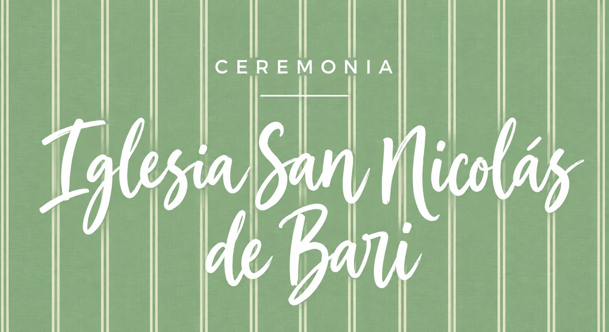
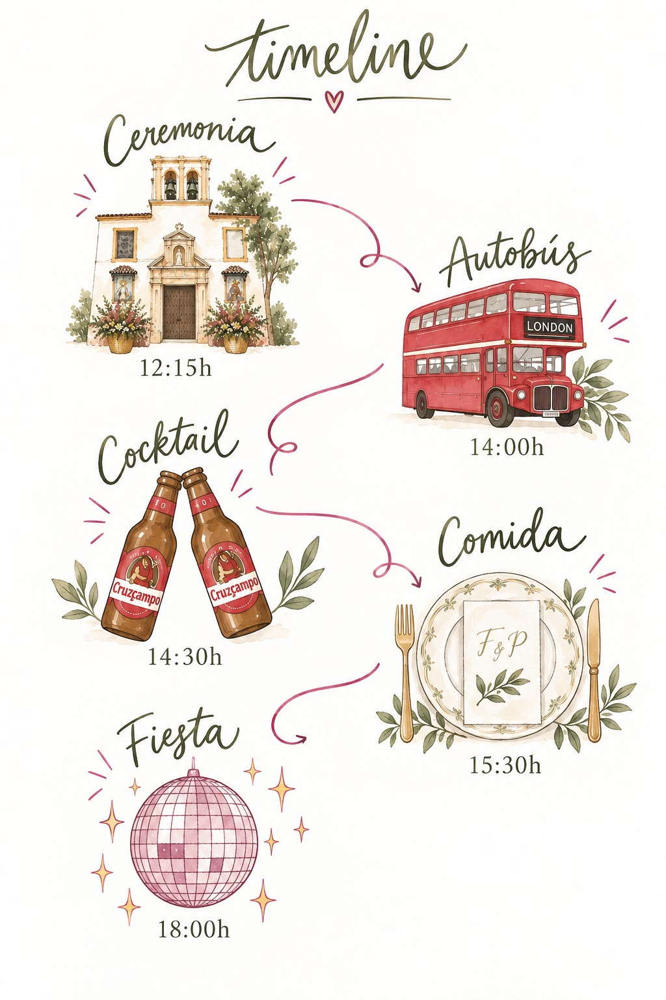
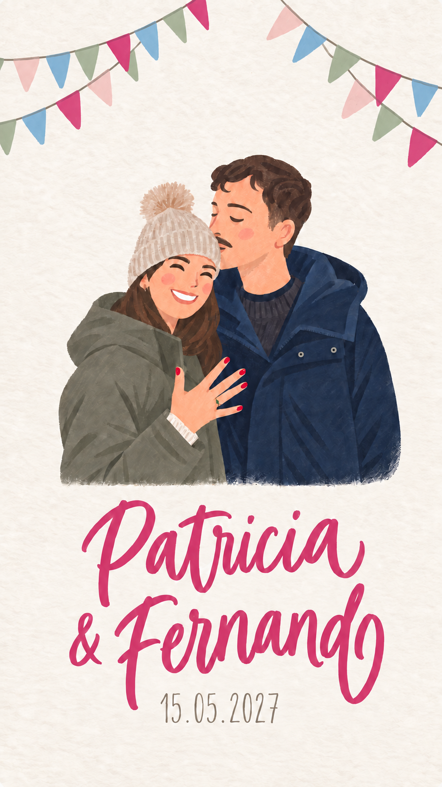

Jardines de Murillo.
21:00 Horas.Primera vuelta.
Fin de fiesta.Segunda vuelta.
* Habrá paradas en Plaza de Cuba y en Jardines de Murillo.Ayúdanos con la playlist

Spotify Boda Fernando y Patri Abrir en Spotify ↗Aquí podrás subir las fotos y vídeos que captures durante el día.
Súbelas aquíLa mejor opción es ir en taxi/Uber. Pero si necesitais ir en coche la mejor opción es el aparcamiento Interparking Cano y Cueto
El lugar de celebración tendrá lugar en la finca Campo Alegre, situada en Útrera. Nuestra recomendación es usar el servicio de autobús que tenemos para ese día. En caso de ir en vehículo personal, la finca dispone de aparcamiento privado.
Indícanoslo en el campo «Intolerancias» del formulario «¿Asistirás?», justo debajo de los hoteles cercanos, para que podamos tenerlo en cuenta.
Encontrarás el formulario «¿Asistirás?» justo debajo de los hoteles cercanos. ¡Confírmanos lo antes posible para ayudarnos a organizarlo todo!
los autobuses realizaran dos paradas a la vuelta, Plaza de Cuba y Jardines de Murillo. Habrá dos horas de salida, a las 22:00 h y a las 00:30H.
Lo más importante para nosotros es compartir este día contigo. Si además quieres hacernos un regalo, te dejamos nuestros datos. ¡Gracias de corazón!
IBAN: Pendiente de añadir
por acompañarnos y formar parte de uno de los días más importantes de nuestra vida.